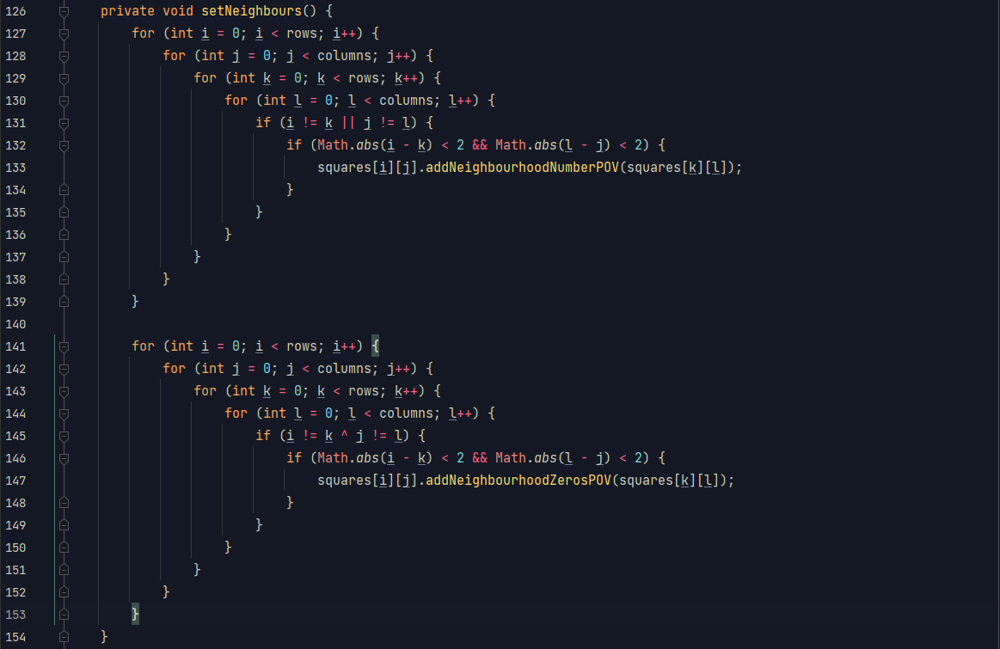
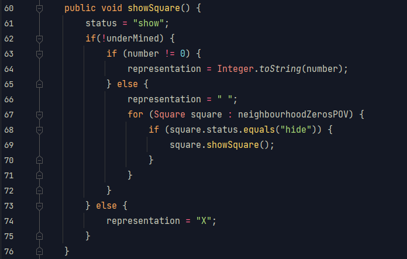

Aknakereső
2 hétig vártam rá, hogy összeálljon a fejemben a kép a rekurziót illetően. Amikor ez megtörtént, első dolgom volt megírni ezt a kódot.
- - -
Szomszédos mezők meghatározása
Midegyik mező egy objektum, amely egy-egy listát tárol el a szomszédos mezőiről: egy négyes listát a kereszt alakban szomszédosakról, illetve egy nyolcelemű listában a sarokban szomszédosak is szerepelnek. Előbbi a kijelzendő számhoz szükséges, utóbbi a "nullás expanzióhoz". Ez az, amikor nullás mezőre kattintunk, és nem egy nulla jelenik meg, hanem egy üres mező, ami szétterjed addig, amíg számba nem ütközik.
Ezért a két listáért az alábbi képvers felel:
"Nullás expanzió"
a.k.a. "élesben" először alkalmazott rekurzív algoritmusom
